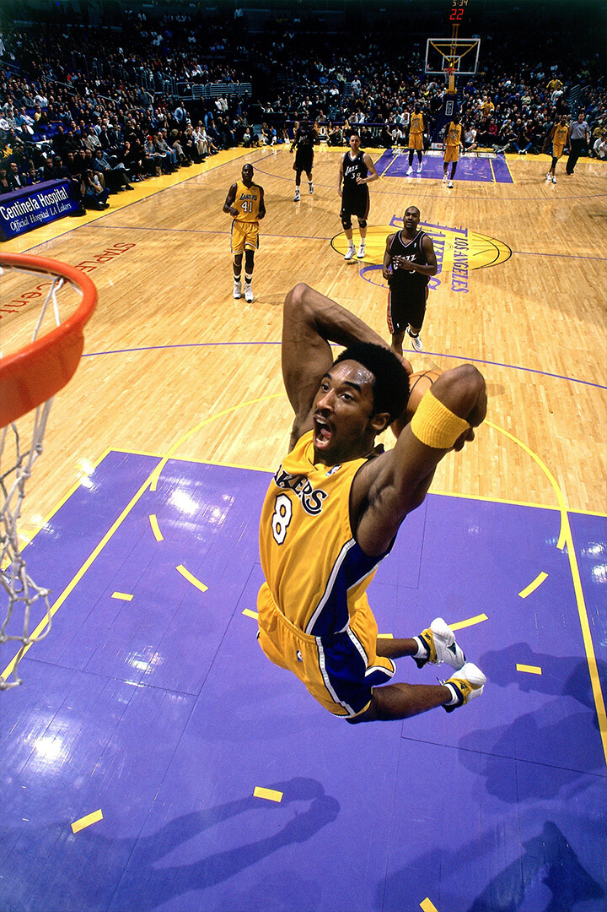

Um pouco da história desse esporte incrível.
Hoje, o basquete é um dos esportes mais praticados no mundo.
A NBA (National Basketball Association) é considerada a maior liga do planeta, com ídolos
como Michael Jordan, LeBron James, Kobe Bryant e Kevin Durant.

No Brasil, o NBB (Novo Basquete Brasil) é o principal campeonato nacional,
revelando talentos que inclusive chegam a jogar em ligas internacionais.